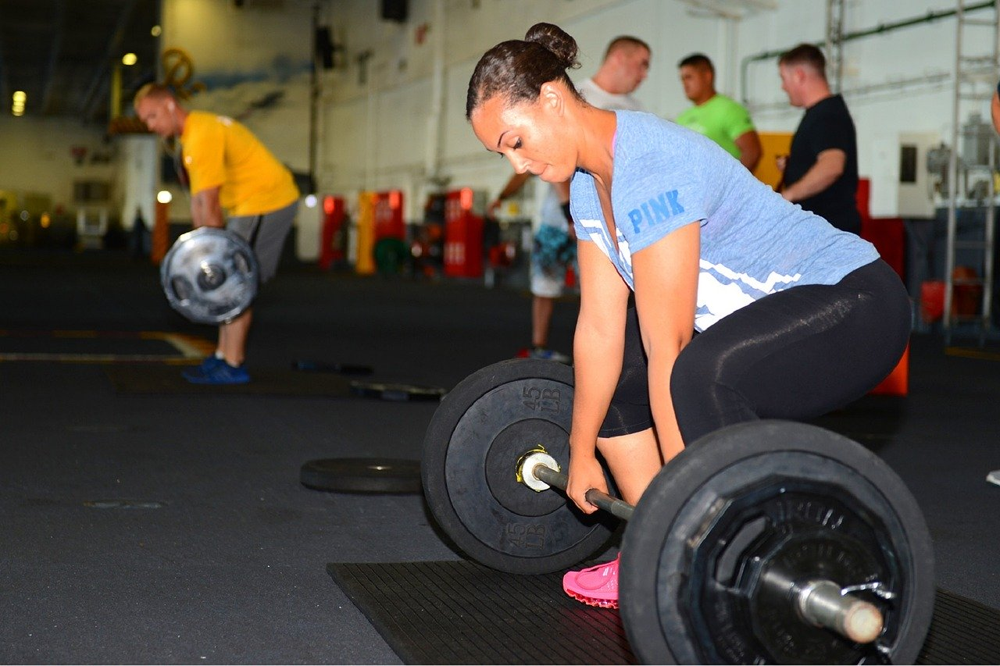

Main Content
About Haarlem

About Haarlem
Explore the city

Learn about sports in Haarlem.
HWA-RANG DRAGON is a sports club in Parkwijk neighborhood in Haarlem that offers lessons in Brazilian Jiu Jitsu
HWA-RANG DRAGON is a sports club in Schalkwijk neigbhorhood in Haarlem that offers Taekwondo lessons
HWA-RANG DRAGON is a sports club in the Kleine Hout neighborhood in Haarlem that offers lesson in Mudo.
HWA-RANG DRAGON is a sports club in the centrum of Haarlem that offers lesson in brazilian-jiu-jitsu.

HWA-RANG DRAGON is a sports club in the Slachthuiswijk neighborhood of Haarlem that offers lesson in brazilian-jiu-jitsu.

HWA-RANG DRAGONis a sports club in the Wheermolen neighborhood of Haarlem that offers lesson in brazilian-jiu-jitsu.

HWA-RANG DRAGON is a sports club in Europawijk neighborhood in Haarlem that offers lessons in Brazilian Jiu Jitsu

HWA-RANG DRAGON is a sports club in Meerwijk neighborhood in Haarlem that offers lessons in Brazilian Jiu Jitsu

HWA-RANG DRAGON is a sports club in Purmer-Zuid neighborhood in Haarlem that offers lessons in Brazilian Jiu Jitsu

HWA-RANG DRAGON is a sports club in Oosterduin neighborhood in Haarlem that offers lessons in Brazilian Jiu Jitsu
Here is tag line for referral!